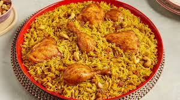

Kabsa

Delicious looking Kabsa
Al kabsa was the first Arabic dish I ever made. It turned out extremely delicious and is a new favorite. Serve with fresh mixed cucumber, carrot, lettuce, and tomato salad — preferably with a little lime vinaigrette. Some fresh pita bread on the side would also be nice. Saudis like their kabsa with a hot sauce called shattah. Enjoy!
Ingredients:
- 1/4 cup Butter
- 1 Onion, finely chopped
- 6 cloves garlic, minced
- 1 whole chicken
- 1/4 cup tomato puree
- 1 can diced tomatoes, undrained
- 3 carrots, peeled and grated
- 2 whole cloves
- 1 pinch ground nutmeg
- 1/4 cup raisins
- Salt & Pepper
- 2 1/4 cups unrinsed basmati rice
Cooking Steps:
- Make the mix
- Melt butter, cook and stir onion and garlic, mix in tomato puree
- Stir in canned tomatoes, carrots, cloves, nutmeg, cumin
- Bring the sauce to a boil, reduce heat and cover pot
- Gently stir in the rice